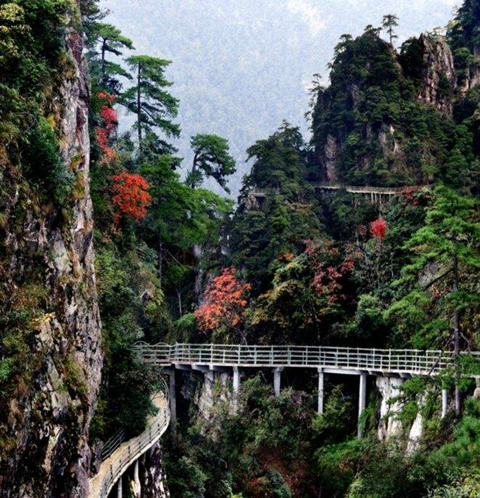

重温红色经典丨徒步井冈山 再现革命峥嵘岁月

各地-南昌-井冈山-南昌-各地
- 山地徒步
- 红色党建
3天2夜
重走红军路，重温革命历史光辉
徒步登山，锻炼团队坚强意志
翻山越岭，共创红色经典团队
徒步登山，锻炼团队坚强意志
翻山越岭，共创红色经典团队

【产品亮点】
徒步在巍峨的井冈山，我们不仅可以看见眼前秀丽的山水，更能在一路艰难的徒步前行中重温当年红军路的光辉历程。再这一路前行中，凝聚团队力量，锻炼百折不挠的精神，我想这就是井冈山无形中带给大家的力量吧！铭记这里的红色文化，让它在人生前行的路上给你鼓励，告诉你，什么叫做团结就是力量！团结就可以成功！
徒步在巍峨的井冈山，我们不仅可以看见眼前秀丽的山水，更能在一路艰难的徒步前行中重温当年红军路的光辉历程。再这一路前行中，凝聚团队力量，锻炼百折不挠的精神，我想这就是井冈山无形中带给大家的力量吧！铭记这里的红色文化，让它在人生前行的路上给你鼓励，告诉你，什么叫做团结就是力量！团结就可以成功！
【行程介绍】
井冈山作为中国革命的摇篮，是一块浸透着烈士鲜血的圣地。这里有很多的革命人文景观，是土地革命初期中国工农红军革命遗址最集中的地方。保存完好的革命旧居旧址有几十处，为后人留下了宝贵的精神财富——井冈山精神。 “井冈山，两件宝；历史红，山林好。”这是对井冈山的高度概括和真实写照。井冈山既具有辉煌的历史，又有绚丽的自然风光，革命的人文景观与优美的自然景观交相辉映，融为一体，是一个集观光旅游、传统教育于一体的理想旅游避暑胜地。
井冈山作为中国革命的摇篮，是一块浸透着烈士鲜血的圣地。这里有很多的革命人文景观，是土地革命初期中国工农红军革命遗址最集中的地方。保存完好的革命旧居旧址有几十处，为后人留下了宝贵的精神财富——井冈山精神。 “井冈山，两件宝；历史红，山林好。”这是对井冈山的高度概括和真实写照。井冈山既具有辉煌的历史，又有绚丽的自然风光，革命的人文景观与优美的自然景观交相辉映，融为一体，是一个集观光旅游、传统教育于一体的理想旅游避暑胜地。

【行程安排】
Day1 各地-井冈山
按照各地航班飞往井冈山机场，按航班到达时间安排工作人员接机，品尝美味的当地特色菜肴，之后上车前往酒店，主要是以调整、休息为主；下午自由活动，可以去收罗一下当地的特色美食，和老街奶奶聊一下井冈山上的光辉历史。
住宿：中泰来国际酒店
用餐：井冈山特色农家菜
井冈山中泰来国际大酒店位于中国革命摇篮，国家5A级“井冈山景区”茨坪镇井遂公路与主峰路交汇处，三面临山，一面拥湖，毗邻著名景点五指峰、黄洋界，依山面水，环境优美。 酒店由深圳市中泰来投资控股公司斥资3.6亿元人民币打造，由香港著名酒店管理公司中泰来国际酒店管理集团经营管理，目前井冈山地区规模最大、档次最高、配套最全的一家集旅游、休闲、度假、会议学习、商务活动为一体的综合性五星级度假酒店。
井冈山中泰来国际大酒店主体总建筑面积4.5万平方米，拥有各类豪华客房，完善的设备、新颖的设计、人性化的服务让您放松心情，感受自然。时尚的设计、严谨的管理、细腻的服务将让您的商务、休闲、会务、美食、娱乐之旅得到最好诠释！
早上享用酒店精美早餐之后，轻装上阵，整队出发，驱车前往大井村，跟着领队舒展舒展筋骨，开始重走我们的红军路！
“高路入云端，过了黄洋界，险处不须看！”1965年毛泽东在《重上井冈山》中对黄洋界有着如此的赞叹。沿着山腰的完完全全向上的盘山公路，峰峦叠嶂，浓浓的雨雾在山间蒸腾，乳白的云海在天空飘流，青翠的毛竹在风中摇曳，深绿的松树、杉林傲然屹立，潺潺的溪水在山涧流淌，清新的山风沁人心脾……
到了中午，沿路合适的地方休整，吃点东西补充体力。偶尔在盘山路的转弯处停下脚步欣赏下旅途沿路的风景，从公路边的空旷处朝下看，一个豁朗的峡谷张开巨口，吞纳了座座山峰，条条溪涧，蓬蓬绿树，远处山凹里坐落着一些蒙蒙胧胧、若隐若现的村庄……黄洋界地势十分险峻，是当年井冈山根据地的一大屏障。
徒步在这巍巍的井冈山，最难忘的不只是那秀丽的风景，迷人的山色，更让人铭记的是这里的红色文化，是那种井冈山百折不饶的精神吧！
之后返程下山，我们大巴车已经在等候凯旋的大家啦！下山之后前往上下农家乐，品尝最地道的乡野美食，之后回酒店洗个热水澡，好好休息一下吧。明天还有丰富的红色文化等着你。
Day3 井冈山--井冈山革命博物馆-各地
早上起床用好早餐，带上行李，驱车前往井冈山，首站是龙潭瀑布群。 龙潭瀑布群 又称五龙潭，因五神河水在不到两公里的河程中五次飞跃山岩，形成五个梯状的瀑布和深潭，因而得名。景区内瀑布数量多、落差大、形态美，有“五潭十八瀑”之称。主要有碧玉潭、锁龙潭、珍珠潭、珍珠潭、击鼓潭（飞凤潭）、仙女潭。除飞瀑外，景区内还有龙女峰、姐妹峰、海螺峰、回音壁、一线天、琴台、“金龟击鼓”、人面崖、“定海针”、揽月台等景点。
13:00 吃过午饭之后，前往井冈山革命博物馆
井冈山革命博物馆 位于茨坪西坡中段，始建于1959年，为纪念中国共产党创建的第一个农村革命根据地井冈山而建。馆标“井冈山革命博物馆”是由朱德同志1962年3月重上井冈山时题写，博物馆建筑古朴庄严，具有明显的民族风格。是著名的爱国主义教育基地。
游览一个小时之后，下午14:00上车，车上领队活动搞起来，大家分享一下本次旅程的收获！我们井冈山红色光辉之旅就画上一个圆满的句号啦！驱车前往机场，返程回到温馨的家。
Day1 各地-井冈山
按照各地航班飞往井冈山机场，按航班到达时间安排工作人员接机，品尝美味的当地特色菜肴，之后上车前往酒店，主要是以调整、休息为主；下午自由活动，可以去收罗一下当地的特色美食，和老街奶奶聊一下井冈山上的光辉历史。
住宿：中泰来国际酒店
用餐：井冈山特色农家菜
井冈山中泰来国际大酒店位于中国革命摇篮，国家5A级“井冈山景区”茨坪镇井遂公路与主峰路交汇处，三面临山，一面拥湖，毗邻著名景点五指峰、黄洋界，依山面水，环境优美。 酒店由深圳市中泰来投资控股公司斥资3.6亿元人民币打造，由香港著名酒店管理公司中泰来国际酒店管理集团经营管理，目前井冈山地区规模最大、档次最高、配套最全的一家集旅游、休闲、度假、会议学习、商务活动为一体的综合性五星级度假酒店。
井冈山中泰来国际大酒店主体总建筑面积4.5万平方米，拥有各类豪华客房，完善的设备、新颖的设计、人性化的服务让您放松心情，感受自然。时尚的设计、严谨的管理、细腻的服务将让您的商务、休闲、会务、美食、娱乐之旅得到最好诠释！

早上享用酒店精美早餐之后，轻装上阵，整队出发，驱车前往大井村，跟着领队舒展舒展筋骨，开始重走我们的红军路！
“高路入云端，过了黄洋界，险处不须看！”1965年毛泽东在《重上井冈山》中对黄洋界有着如此的赞叹。沿着山腰的完完全全向上的盘山公路，峰峦叠嶂，浓浓的雨雾在山间蒸腾，乳白的云海在天空飘流，青翠的毛竹在风中摇曳，深绿的松树、杉林傲然屹立，潺潺的溪水在山涧流淌，清新的山风沁人心脾……
到了中午，沿路合适的地方休整，吃点东西补充体力。偶尔在盘山路的转弯处停下脚步欣赏下旅途沿路的风景，从公路边的空旷处朝下看，一个豁朗的峡谷张开巨口，吞纳了座座山峰，条条溪涧，蓬蓬绿树，远处山凹里坐落着一些蒙蒙胧胧、若隐若现的村庄……黄洋界地势十分险峻，是当年井冈山根据地的一大屏障。



经过5个多小时的盘山路后，眼前突然开朗，终点就在眼前！过程虽然很辛苦，但是感到很骄傲，因为团结就是力量！又一次完成了自己认为的不可能的任务，重现了井冈山革命精神。徒步在这巍巍的井冈山，最难忘的不只是那秀丽的风景，迷人的山色，更让人铭记的是这里的红色文化，是那种井冈山百折不饶的精神吧！
之后返程下山，我们大巴车已经在等候凯旋的大家啦！下山之后前往上下农家乐，品尝最地道的乡野美食，之后回酒店洗个热水澡，好好休息一下吧。明天还有丰富的红色文化等着你。
Day3 井冈山--井冈山革命博物馆-各地
早上起床用好早餐，带上行李，驱车前往井冈山，首站是龙潭瀑布群。 龙潭瀑布群 又称五龙潭，因五神河水在不到两公里的河程中五次飞跃山岩，形成五个梯状的瀑布和深潭，因而得名。景区内瀑布数量多、落差大、形态美，有“五潭十八瀑”之称。主要有碧玉潭、锁龙潭、珍珠潭、珍珠潭、击鼓潭（飞凤潭）、仙女潭。除飞瀑外，景区内还有龙女峰、姐妹峰、海螺峰、回音壁、一线天、琴台、“金龟击鼓”、人面崖、“定海针”、揽月台等景点。
13:00 吃过午饭之后，前往井冈山革命博物馆
井冈山革命博物馆 位于茨坪西坡中段，始建于1959年，为纪念中国共产党创建的第一个农村革命根据地井冈山而建。馆标“井冈山革命博物馆”是由朱德同志1962年3月重上井冈山时题写，博物馆建筑古朴庄严，具有明显的民族风格。是著名的爱国主义教育基地。
游览一个小时之后，下午14:00上车，车上领队活动搞起来，大家分享一下本次旅程的收获！我们井冈山红色光辉之旅就画上一个圆满的句号啦！驱车前往机场，返程回到温馨的家。

【出行装备】
1、穿适合户外运动的宽松衣裤，（山上温度低，请带件防寒衣服，注意保暖）。
2、适合户外运动的登山鞋或者徒步鞋（千万别穿板鞋或者合脚的新鞋）。
3、双肩包（腾出双手可以拍照等），头巾（功能多多）,护膝（保护膝盖），登山杖（节省30%体力消耗），雨披（有备无患），头灯或手电筒（未雨绸缪）。
4、遮阳帽、防滑手套、户外水壶、太阳镜、湿纸巾、防晒霜等。
5、个人身份证件、少量RMB，手机、相机、充电宝等个人所需物品。
6、少量水果、零食、补给水、高能量户外食品；牛肉、巧克力、士力架等等丰俭由人。
7、个人备用药物。
【出行守则】
1，健康提醒：根据活动的难易程度，评估您是否适合参加户外运动。
2，安全原则：户外活动中听从领队指挥。正确使用户外用具及防护用具。
3，适合年龄: 7周岁-60周岁 ，如有携带年龄不符合的成员，请慎重参加户外活动。
【费用说明】
1，参考价格是按照活动标配的物资及工作人员计算，团队定制时住宿及用餐标准自调
2，用餐均以桌数为单位计算。
3，团队活动统一购买户外运动高风险意外险
【不可抗力】
1，雨天备案 ：提前三天根据天气预报，在不影响行程的前提下做雨天备案。
2，行程改期 ：由于客户自身原因造成的行程改期，所产生的违约金由客户方承担。
【徒步小贴士】
① 匀速行走，在平地和下坡路时候匀速可以减轻很多体力，靠惯性的力量带动身体的起伏。
② 呼吸均匀，鼻吸嘴呼，短吸长呼，身体不适时保持深呼吸。
③ 及时补水，小口慢咽。
④ 注意下坡路，身体微侧行走，保护膝盖。
⑤ 不饮用途中经过的山泉水。
⑥ 行走时不打闹不玩耍不拍照，目视前方。
⑦ 善于使用手杖，可以节省很多力气。
⑧ 减少坐下来休息的次数，可站着依靠大树等支撑休息。每行走45分钟休息10分钟。
⑨ 徒步后需要休息45分钟方可进食。
1、穿适合户外运动的宽松衣裤，（山上温度低，请带件防寒衣服，注意保暖）。
2、适合户外运动的登山鞋或者徒步鞋（千万别穿板鞋或者合脚的新鞋）。
3、双肩包（腾出双手可以拍照等），头巾（功能多多）,护膝（保护膝盖），登山杖（节省30%体力消耗），雨披（有备无患），头灯或手电筒（未雨绸缪）。
4、遮阳帽、防滑手套、户外水壶、太阳镜、湿纸巾、防晒霜等。
5、个人身份证件、少量RMB，手机、相机、充电宝等个人所需物品。
6、少量水果、零食、补给水、高能量户外食品；牛肉、巧克力、士力架等等丰俭由人。
7、个人备用药物。
【出行守则】
1，健康提醒：根据活动的难易程度，评估您是否适合参加户外运动。
2，安全原则：户外活动中听从领队指挥。正确使用户外用具及防护用具。
3，适合年龄: 7周岁-60周岁 ，如有携带年龄不符合的成员，请慎重参加户外活动。
【费用说明】
1，参考价格是按照活动标配的物资及工作人员计算，团队定制时住宿及用餐标准自调
2，用餐均以桌数为单位计算。
3，团队活动统一购买户外运动高风险意外险
【不可抗力】
1，雨天备案 ：提前三天根据天气预报，在不影响行程的前提下做雨天备案。
2，行程改期 ：由于客户自身原因造成的行程改期，所产生的违约金由客户方承担。
【徒步小贴士】
① 匀速行走，在平地和下坡路时候匀速可以减轻很多体力，靠惯性的力量带动身体的起伏。
② 呼吸均匀，鼻吸嘴呼，短吸长呼，身体不适时保持深呼吸。
③ 及时补水，小口慢咽。
④ 注意下坡路，身体微侧行走，保护膝盖。
⑤ 不饮用途中经过的山泉水。
⑥ 行走时不打闹不玩耍不拍照，目视前方。
⑦ 善于使用手杖，可以节省很多力气。
⑧ 减少坐下来休息的次数，可站着依靠大树等支撑休息。每行走45分钟休息10分钟。
⑨ 徒步后需要休息45分钟方可进食。